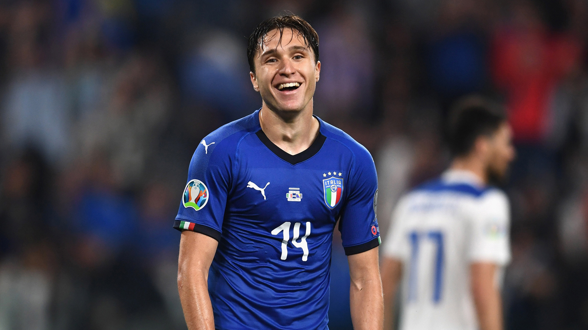
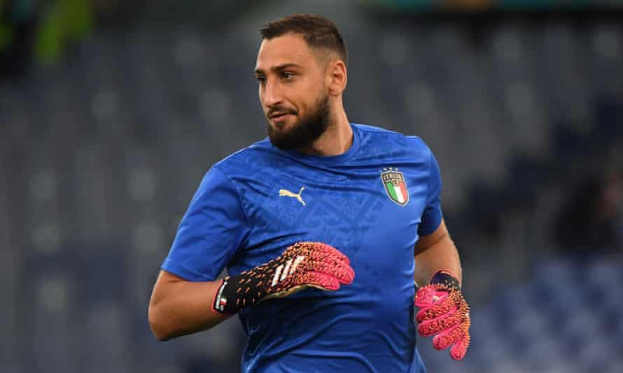
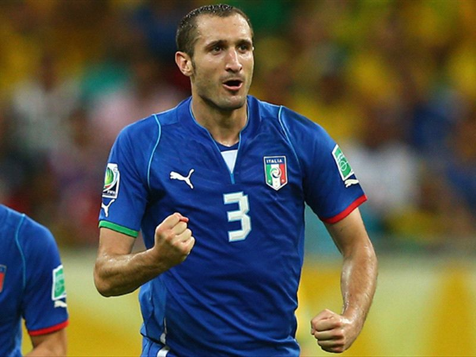
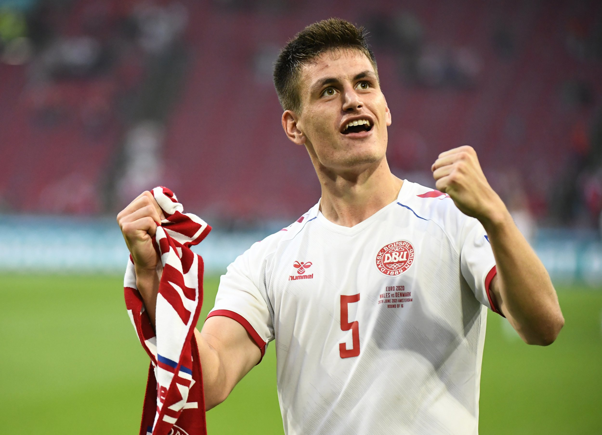
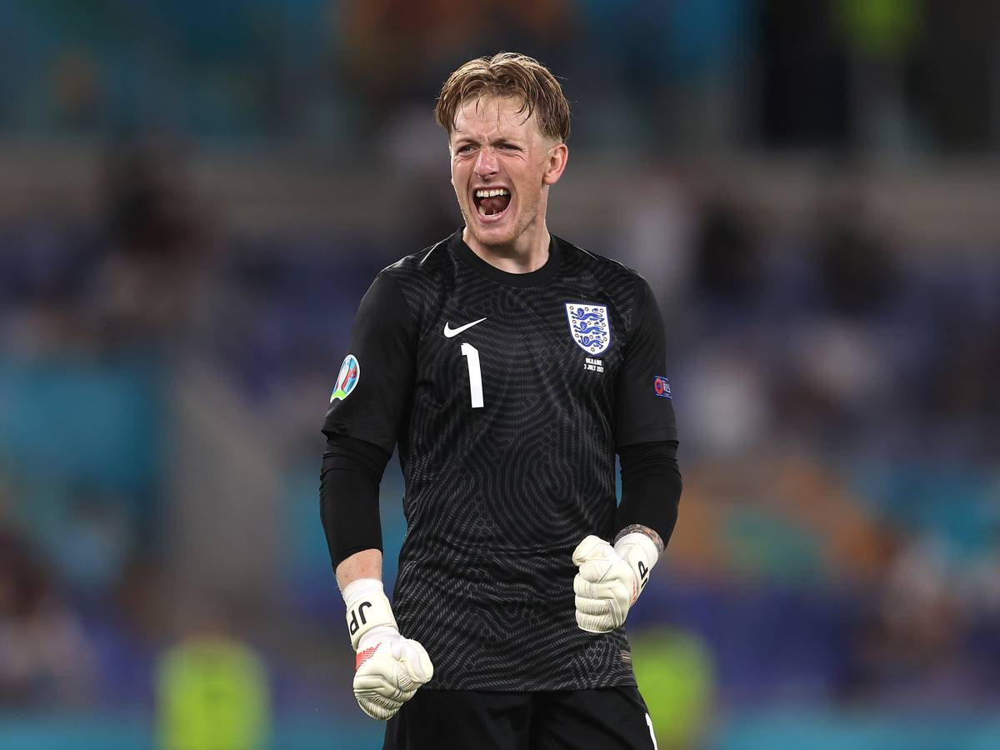
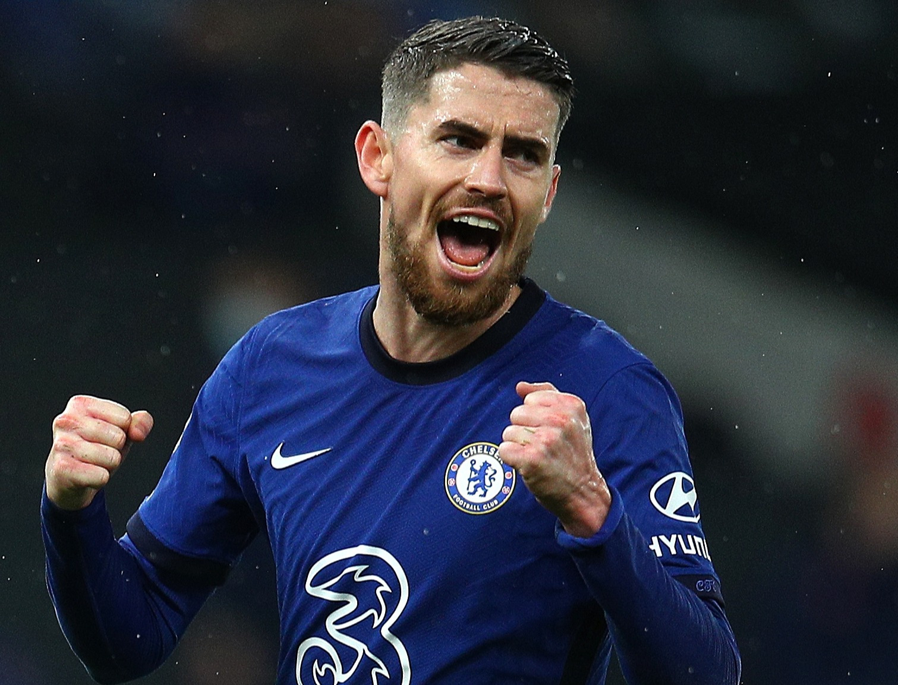
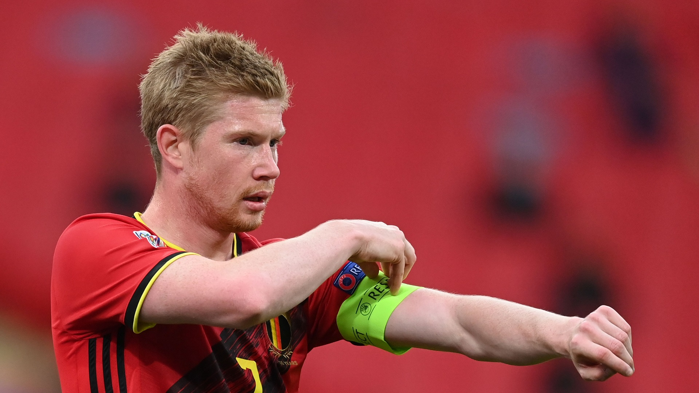
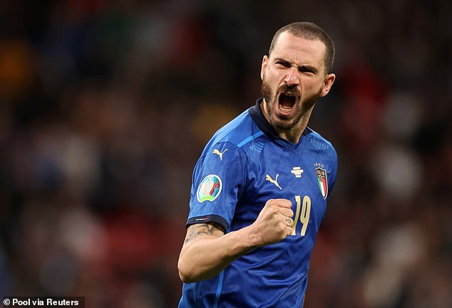
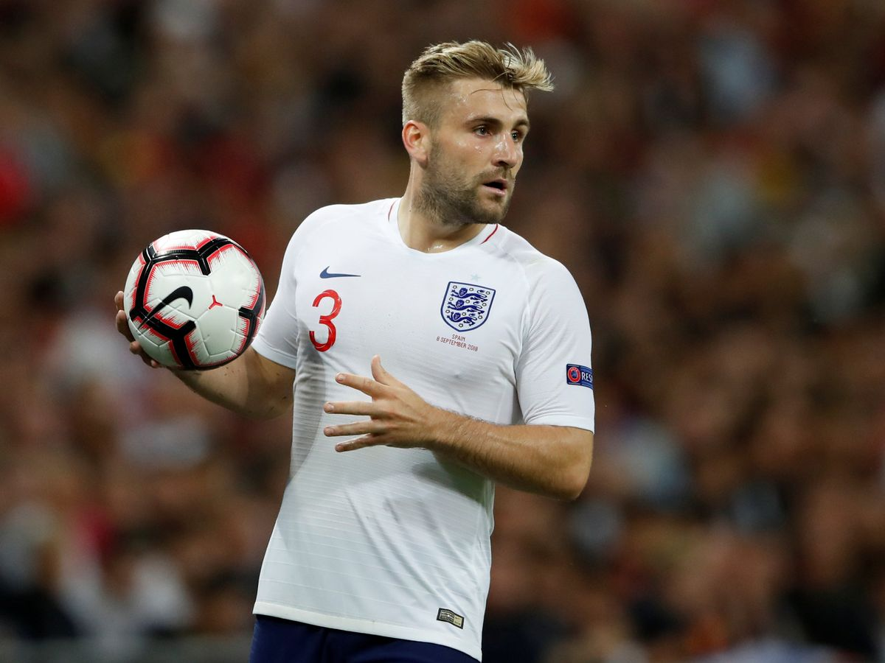
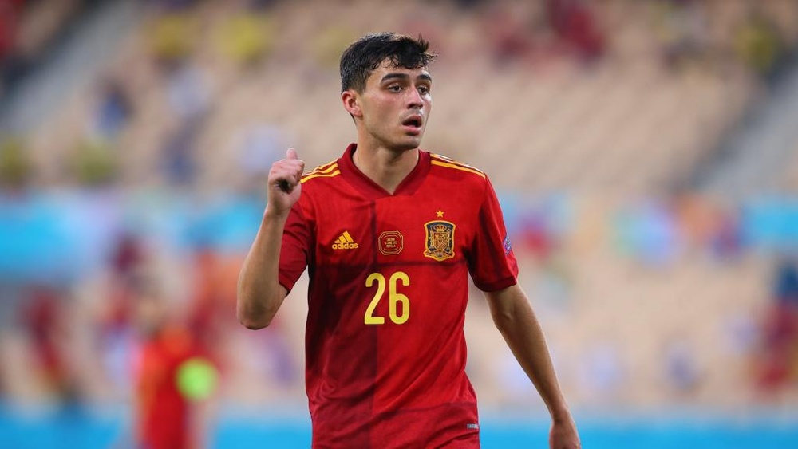

Cristiano Ronaldo
Cristiano Ronaldo dos Santos Aveiro GOIH ComM (Portuguese pronunciation: [kɾiʃˈtjɐnu ʁɔˈnaɫdu]; born 5 February 1985) is a Portuguese professional footballer who plays as a forward for Serie A club Juventus and captains the Portugal national team. Often considered the best player in the world and widely regarded as one of the greatest players of all time, Ronaldo has won five Ballons d'Or

Federico Chiesa
Federico Chiesa (Italian pronunciation: [fedeˈriːko ˈkjɛːza; ˈkjeːza];[4][5] born 25 October 1997) is an Italian professional footballer who plays as a winger for Serie A club Juventus, on loan from Serie A club Fiorentina, and the Italy national team. He is the son of former footballer Enrico Chiesa.

Gianluigi Donnarumma
Gianluigi Donnarumma (Italian pronunciation: [dʒanluˈiːdʒi ˌdɔnnaˈrumma]; born 25 February 1999) is an Italian professional footballer who plays as a goalkeeper for the Italy national team. Currently a free agent, he most recently played for Serie A club AC Milan. He began his career with AC Milan in 2015, becoming the second-youngest goalkeeper ever to debut in Serie A, aged 16 years and 242 days

Giorgio Chiellini
Giorgio Chiellini (Italian pronunciation: [ˈdʒordʒo kjelˈliːni, ˈdʒɔr-]; born 14 August 1984) is an Italian professional footballer who plays as a defender and captains the Italy national team. Currently a free agent, he most recently played for Serie A club Juventus

Joakim Maehle
Born in Østervrå, Vendsyssel, Mæhle started playing football with local club Østervrå IF and moved to the AaB youth academy as a 12-year-old.[1] At the age of 19, Mæhle was promoted into the first team squad on 10 June 2016 and also signed a full-time senior contract with AaB.[2] He made his debut for AaB on 7 August 2016.

Jordan Pickford
Jordan Lee Pickford (né Logan; born 7 March 1994) is an English professional footballer who plays as a goalkeeper for Premier League club Everton and the England national team.
Pickford has previously played for Sunderland's academy, reserve, and senior teams in addition to loan spells at Darlington, Alfreton Town, Burton Albion, Carlisle United, Bradford City and Preston North End

Jorginho
Jorge Luiz Frello Filho (born 20 December 1991), known as Jorginho, is a professional footballer who plays as a midfielder for Premier League club Chelsea and the Italy national team. He operates as a defensive midfielder or a deep-lying playmaker, also known as a regista in Italian football.

Kevin De Bruyne
Kevin De Bruyne (born 28 June 1991) is a Belgian professional footballer who plays as a midfielder for Premier League club Manchester City, where he is vice-captain, and the Belgium national team. He is one of just three players (the others being Cristiano Ronaldo and Thierry Henry) to have won the PFA Players' Player of the Year award back to back
Leonardo Spinazzola
Born in Foligno, Spinazzola started his career at Siena's youth setup.[4] In 2010, he joined Juventus in a temporary deal, being assigned to the Primavera squad. In June 2012 Juventus signed half of the registration rights for €400,000.

Leonardo Bonucci
Leonardo Bonucci (Italian pronunciation: [leoˈnardo boˈnuttʃi]; born 1 May 1987) is an Italian professional footballer who plays as a centre-back for and serves as vice captain of both Serie A club Juventus and the Italy national team.

Luke Shaw
Luke Paul Hoare Shaw (born 12 July 1995) is an English professional footballer who plays as a left-back for Premier League club Manchester United and the England national team.
Originally a member of Southampton's youth system, Sha

Pedri
Pedro González López (born 25 November 2002), known as Pedri, is a Spanish professional footballer who plays as a central midfielder for La Liga club Barcelona and the Spain national team.